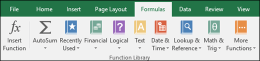
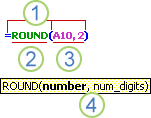
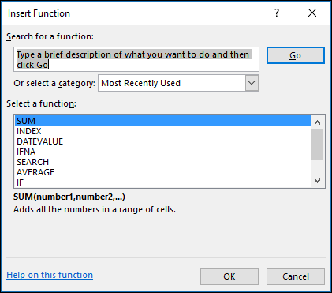
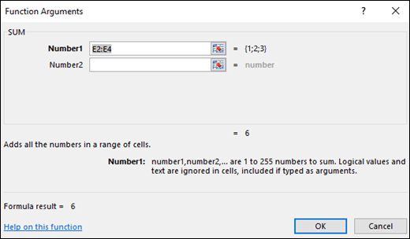
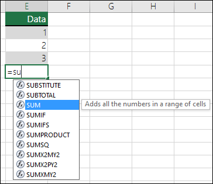

Functions are predefined formulas that perform calculations by using specific values, called arguments, in a particular order, or structure. Functions can be used to perform simple or complex calculations. You can find all of Excel's functions on the Formulas tab on the Ribbon:

Excel function syntax
The following example of the ROUND Function rounding off a number in cell A10 illustrates a function's syntax.
1. Structure. The structure of a function begins with an equal sign (=), followed by the function name, an opening parenthesis, the arguments for the function separated by commas, and a closing parenthesis.
2. Function name. For a list of available functions, click a cell and press SHIFT+F3, which will launch the Insert Function dialog.
3. Arguments. Arguments can be numbers, text, logical values such as TRUE or FALSE, arrays, error values such as #N/A, or cell references. The argument you designate must produce a valid value for that argument. Arguments can also be constants, formulas, or other functions.
4. Argument tooltip. A tooltip with the syntax and arguments appears as you type the function. For example, type =ROUND( and the tooltip appears. Tooltips appear only for built-in functions.
Note: You don't need to type functions in all caps, like =ROUND, as Excel will automatically capitalize the function name for you once you press enter. If you misspell a function name, like =SUME(A1:A10) instead of =SUM(A1:A10), then Excel will return a #NAME? error.
Entering Excel functions
When you create a formula that contains a function, you can use the Insert Function dialog box to help you enter worksheet functions. Once you select a function from the Insert Function dialog Excel will launch a function wizard, which displays the name of the function, each of its arguments, a description of the function and each argument, the current result of the function, and the current result of the entire formula.

To make it easier to create and edit formulas and minimize typing and syntax errors, use Formula AutoComplete. After you type an = (equal sign) and beginning letters of a function, Excel displays a dynamic drop-down list of valid functions, arguments, and names that match those letters. You can then select one from the drop-down list and Excel will enter it for you.
